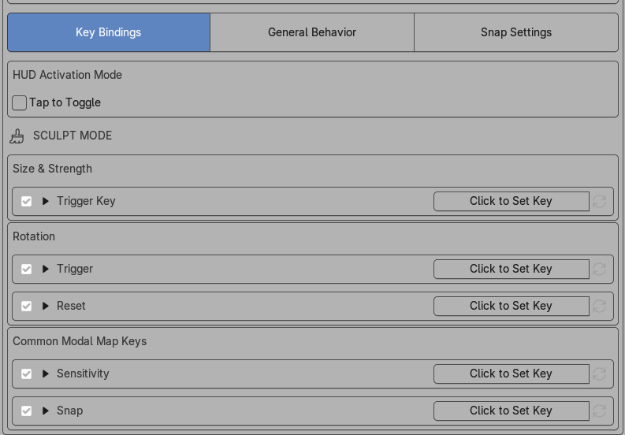

Key Bindings

HUD Activation Mode
Tap to Toggle
Tap to Toggle changes the activation model from simple hold behavior to also include a quick-tap toggle workflow.
- Enable it if you want a tap to bring up the HUD.
- When toggled on both tap and hold will work
Tap Toggle Grace Period
Tap Toggle Grace Period extends the timing window that still counts as a toggle-style tap.
- Increase it if your key taps re not reliably recognized.
- Reduce it if you want the distinction between tap and hold to feel stricter.
Size & Strength
Trigger Key
Trigger Key is the main shortcut used to open the BrushHud overlay for size & strength adjustments.
Rotation
Trigger
Rotation Trigger starts the dedicated Rotation HUD.
- If you do not use texture rotation often, this can stay on a secondary shortcut.
Reset
Rotation Reset returns the current brush texture rotation to zero.
- This is most useful if you actively rotate textures and need a clean default often.
Common Modal Map Keys
- These shared properties will work with size&strength or rotation.
Sensitivity
Sensitivity is the shared modifier that slows adjustment speed while the modal HUD is active.
- Use it for finer control over size or strength changes.
- This is the key to reach for when the normal drag speed feels too coarse.
Snap
Snap is the shared modifier that engages snapping-based behavior while the modal HUD is active.
- Use it for stepped size, strength, or rotation changes.
- The exact snap increments are defined on the Snap Settings page.
Practical Advice
New users usually only need to decide three things at first:
- the main Trigger Key,
- whether Tap to Toggle should be enabled (toggle it on since both modes work when on)
- which modifier should act as the Sensitivity key.
Once those feel right, the rest of the interaction tuning becomes much easier.